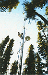
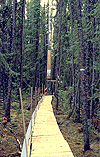

P.I.(s): Steven C. Wofsy -- Harvard University
Co-I(s): J. William Munger, Bruce C. Daube, Michael L. Goulden, K.A. Boering, J.D. Burley -- Harvard Univ.
Objectives: Eddy-correlation flux measurements for CO2, and H2O were made at the northern black spruce site from the late summer of 1993 through the fall of 1994. The principle objective is to directly determine the net ecosystem exchange of CO2, and the surface energy budget, over diurnal, seasonal and annual time scales, and to couple these observations with a comprehensive characterization of the physical environment (PAR, soil temperature, etc.). A low-power automated array was installed to measure eddy fluxes and forest column content of CO2, sensible heat, and water vapor; soil temperatures and moisture, and incident and intercepted PAR. The system was operated continuously from installation in September 1993 through October 1994 (with some gaps). Additionally, measurements the flux of CO2 from the soil were made during the summer of 1994 using an array of automated open chambers. Among other things, these long-term measurements should allow us to assess the importance of winter respiration, and assimilation during transitional periods, to the annual carbon balance of the boreal forest.
|  The flux tower at NSA-OBS |  OBS spruce trees and flux tower |
Objectives:
Eddy correlation flux measurements of CO2 and H2O are made at the northern black spruce site from December 1993 to present. Our objective is to directly determine the net ecosystem exchange of CO2 and the surface energy budget over diurnal, seasonal, and annual time scales. We also aim to couple these observations with a comprehensive characterization of the physical environment (temperature, precipitation, PAR, etc.).
Types of Data Collected:
All data is recorded in half-hour periods.
Summary of Site:
The measurements are made continuously at a remote (50 km from the nearest town and 5 km from the nearest road) old (70-90 years) black spruce site. The coverage is relatively homogeneous and the trees reach a height of approximately 10m. The ground cover is primarily feather moss mixed with some lower level areas of sphagnum bog.
Known Problems:
There are some gaps in the data set resulting from a number of technical problems. Also, the data is still preliminary. Some changes will occur when further quality control is implemented and the data is reprocessed.
TF Overview || TF-1 | TF-2 | TF-3 | TF-4 | TF-5 | TF-6 | TF-7 | TF-8 | TF-9 | TF-10 | TF-11
 Send a data request to the BOREAS Data Manager (BOREAS Investigators only)
Send a data request to the BOREAS Data Manager (BOREAS Investigators only)
E-Mail a comment on this page to the curator 
Send e-mail to Fred Huemmrich, the BORIS representative for the TF group
Return to the TF Overview
Return to the BOREAS Science Groups Overview
Return to the BOREAS Home Page
Last Updated: October 30, 1997
{kind=link}
{kind=link}